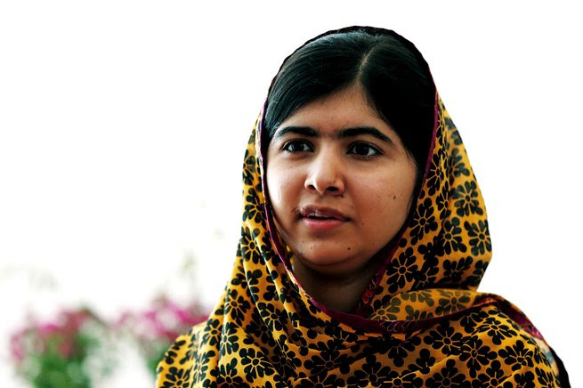

Dandara
Dandara foi uma importante guerreira e líder
quilombola no período colonial brasileiro. Ela
nasceu por volta de 1580 na região de
Pernambuco e, junto com seu marido Zumbi,
liderou o Quilombo dos Palmares contra as
investidas das tropas portuguesas. Sua
coragem e estratégia foram fundamentais na
resistência contra a escravidão e opressão do
povo negro naquela época. Dandara ficou
conhecida por sua habilidade com armas e
pela defesa da liberdade e autonomia de seu povo.
Dandara, mulher negra e guerreira é um dos principais nomes da luta negra
no Brasil. Teve papel fundamental na construção e comando do quilombo dos
Palmares, um dos marcos da resistência contra o regime escravocrata brasileiro,
que existiu e resistiu como quilombo por mais de 100 anos.
Dandara é o símbolo maior das mulheres dos quilombos e no Brasil de hoje
é uma personalidade que dá peso a luta das mulheres pela igualdade. É a
personificação do movimento capaz de induzir a uma reflexão imprescindível
no que se refere às desiguais condições em que são submetidas as mulheres
negras na sociedade atual.
Anne Frank
Muitos conhecem a história da garotinha
judia que foi parar em um campo de concentração
da Alemanha nazista e acabou morrendo. Mas
deixou um diário que ganhou aos 13 anos e onde
contava o seu dia a dia enquanto se escondia com
outros judeus no fundo de uma fábrica.
Anne Frank, apesar de muito nova, foi uma das
mulheres que marcaram história e que deve ser
lembrada por tudo o que passou e por ter
registrado de forma comovente tudo o que
aconteceu nos seus últimos dias.
Esse diário se tornou um livro e
foi traduzido em mais de 30 idiomas.
Ainda há filmes biográficos, inclusive
um que recebeu mais de 3 Oscars.
O Diário de Anne Frank tornou-se um dos documentos históricos mais significativos
da Segunda Guerra Mundial e do Holocausto. Por ele pôde-se ter uma noção da agonia
que aquelas pessoas escondidas enfrentaram enquanto vítimas do antissemitismo nazista.
Malala Yousafzai
A paquistanesa Malala Yousafzai é uma das mulheres que vem chamando a atenção de boa parte do mundo para os direitos das crianças, principalmente, das crianças do sexo feminino.
Ela defendeu que as meninas pudessem frequentar escolas em seu país. Por isso, Malala foi perseguida e sofreu um atentado em 2012, quando voltava da escola em um ônibus.
Depois de meses em tratamento, Malala se recuperou e fundou a Malala Fund, fundação que arrecada verba para destinar à educação de meninas em todo o mundo.
Em 2014, aos 17 anos, foi homenageada com o Prêmio Nobel da Paz, sendo a mais jovem mulher a receber a honraria.

Marie Curie (1867-1934)
Uma grande mulher na ciência foi Marie Curie. Nascida na Polônia na segunda metade do século XIX, Marie se dedicou à química e descobriu elementos da tabela periódica como o rádio e o polônio.
Seus estudos contribuíram para a criação de avanços na medicina como o raio-x. Foi a primeira mulher a ganhar o Prêmio Nobel de Física, em 1903. Em 1911 recebe também o Prêmio Nobel de Química.